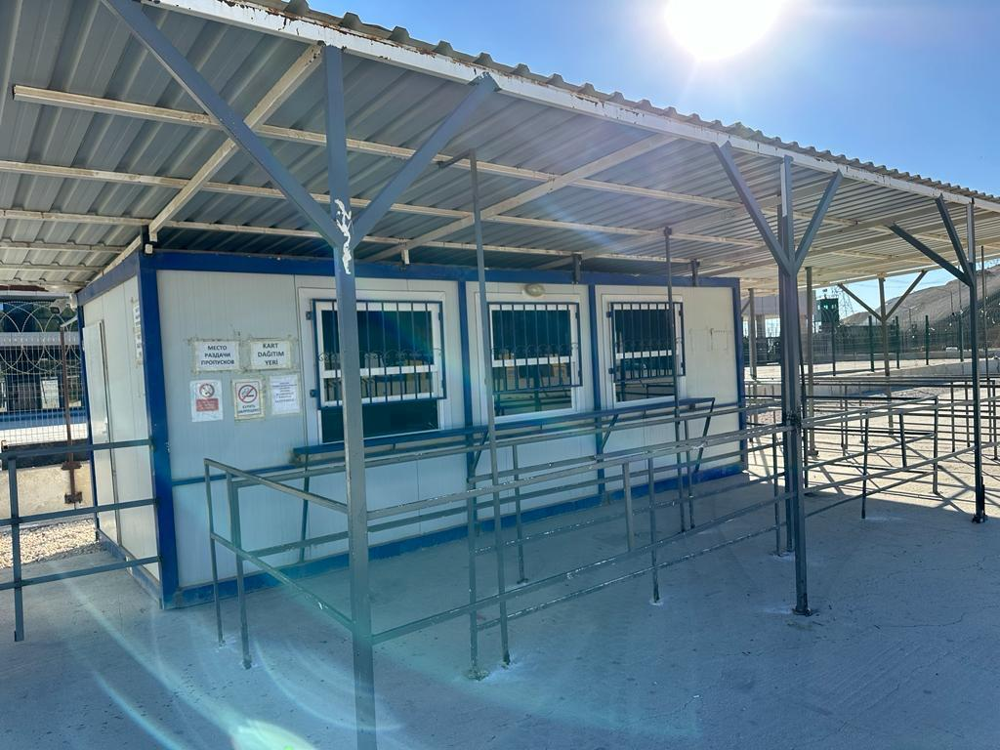
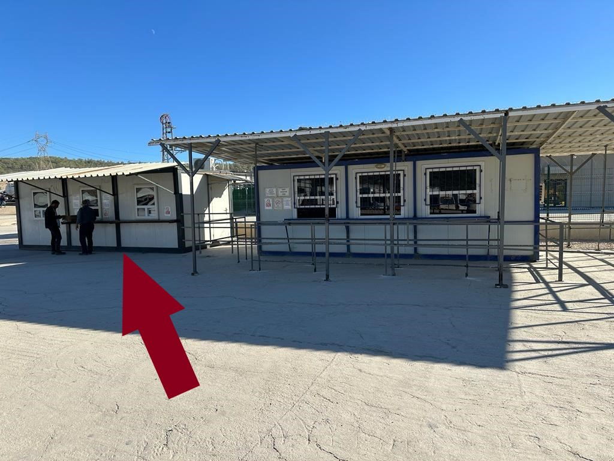
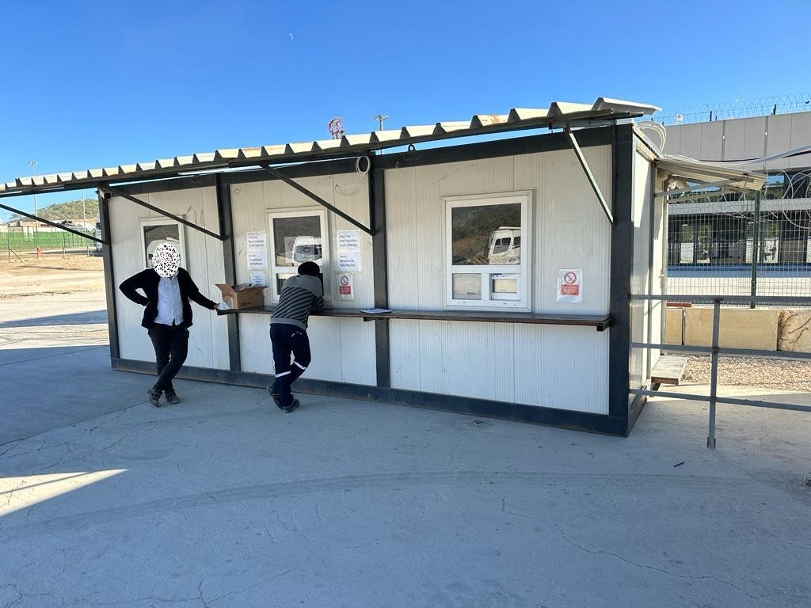
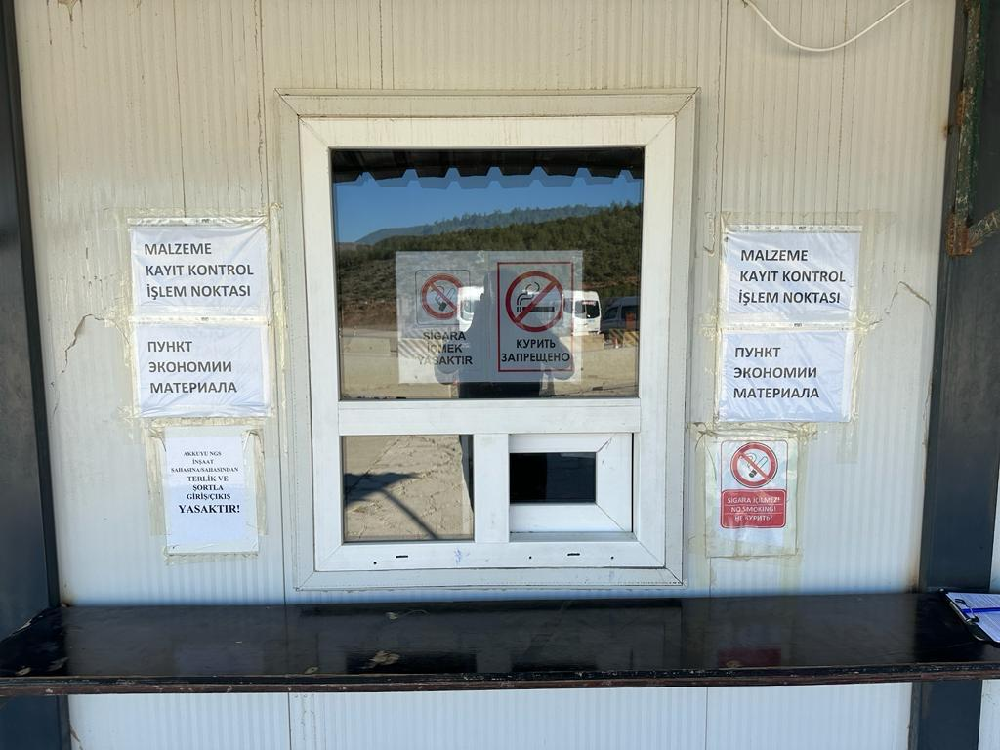

Офис безопасности расположен рядом с зданиями 90VAA-91VAA ABK Akkuyu Nuclear, которые помечены красным цветом на карте.
Для посетителей Akkuyu Nuclear, пункт получения визитных карт расположен перед основными турникетами входа в Akkuyu.
Для входа на территорию, необходимо передать свою личность или паспорт сотруднику в контейнере для визитеров. Если ваша заявка на вход будет одобрена, вам будет выдана визитная карта, с которой вы сможете пройти на территорию.
При выходе с территории, визитная карта должна быть возвращена в контейнер для визитеров, и вы получите свой паспорт или удостоверение личности обратно.

Ваши персональные карты Akkuyu, автомобильные карты или жетоны можно получить в пункте выдачи, расположенном на главном КПП Akkuyu, который помечен красной стрелкой.



Процедуры регистрации и контроля всех материалов, которые будут перемещены на территорию Akkuyu Nuclear, проводятся на этом пункте. Ваши материалы будут проверены сотрудниками вместе с документами, и после этого будет разрешен проход.

